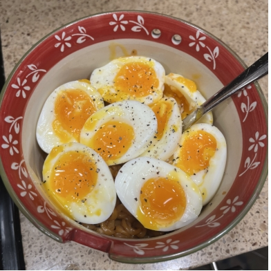

Aynan's Protien Ramen

Aynan's famous protein ramen has popularized itself globably with its bold appearance
and bold flavours. Though most people consider it as just instant ramen with some eggs, it's much
more than that at its core. The amount of thought and love put into this bulking meal goes without saying.
Here are the things that you're going to need
- Your favorite instant ramen
- Medium sized pot
- Small sized pot
- Slotted Spoon
- Bowl of water and ice
- 3 eggs per serving
- Timer
Now that you have everything, it's time to start cooking!
- Boil both pots of water on your stove
- Gently place all of your eggs into the small pot of boiling water using a spoon
- Set a timer for 7 minutes and keep your bowl of ice water on stand-by
- After 4 minutes, place the ramen into the medium sized pot and after a minute, begin to stir
- Once the 7 minutes is up, remove the eggs with a spoon and immediately place them into the ice water
- Tap the eggs on a flat surface and peel them
- Once the noodles are almost all the way cooked through, strain the water and add the seasoning packets included with the ramen
- Mix until all the seasoning is coating the noodles and they are fully cooked through
- Put the noodles in a bowl, cut the eggs in half and add salt and pepper to them, and finally eat and enjoy!